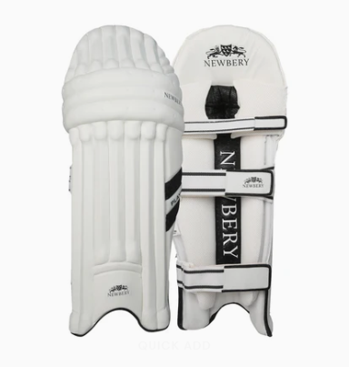

Essential Cricket Equipment
Complete your kit with our professional-grade cricket equipment

Newbery Pro Batting Gloves
₹3,500
Superior protection with premium leather and ergonomic design
Add to Cart
